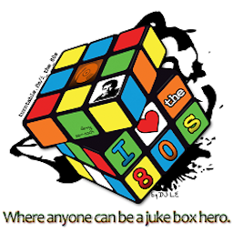
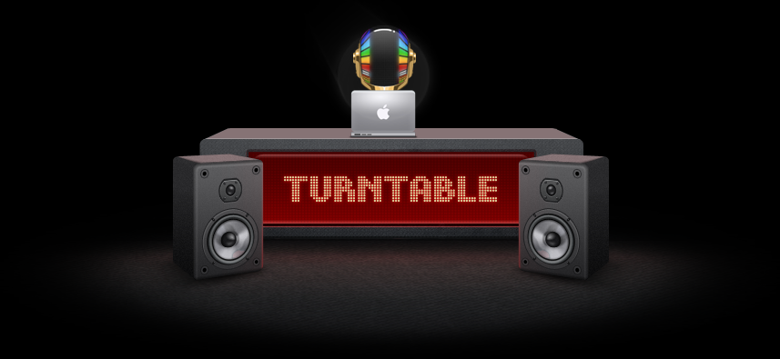

These rules apply only to the I ♥ The 80's room, not to the whole website. They are valid only in the I ♥ The 80's room
For more information on upcoming events and such please join.... Our Official Facebook Group
Attention potential room admins: You may borrow my rules on two conditions: 1, ask me first; 2, give me credit on your rules page. � notice at the bottom. Thanks.
Authorized room Mods: Azerik, TRENT!, Kelsi, PrincessLadyBug, NJgirl78, jodrell @jodrell, Halli, Ashen, Vidgames, ProfDamatu, BukkakeBlaster, Fjord Porkins, Jake @jakewillsmith, Lloyd Christmas, DJ Bad Brad, BarstoolSaints and Wreak Havoc.
Be Nice. This sounds easy, but with the wide variety of music we play you will find something you hate being played. When that happens don't start bitching in chat, just mute the speakers near the DJ stand. If you can discuss why you don't like it in a civil and calm manner, then by all means. We are all music lovers here and we like talking about music, but we are all passionate about things so don't start an argument.
�80's music� is the goal we are striving for. That is a far broader topic than songs released between 1/1/1980 and 12/31/1989. It is a sound more than dates. It is hard to really quantify, but it is usually pretty obvious when you hear it. Example; Nirvana's first album was released in 1989, but they are very firmly 90's music. The Cars first album was released in 1978, but it was 80's music regardless of the date. There are many examples of bands that are ahead of or behind the times. These are the ones that lead us into new �musical decades� and we thank them for it. What this means for the DJ is this: Just because it was released in the 1980's does NOT make it 80's music. This is a US based room, our music will mostly be from US, Canada, UK, and other primarily English speaking countries. Non-English based music will be evaluated on a case by case basis. The decision on whether a song is �80s� or not will reside with the mod on duty, if they ask you to skip then skip or risk losing your seat and possibly banned. (See Also: list of not �legal� artists further down this list)
There is no limit to our DJ waiting list/There is no DJ time limit on stage. As of now, there is no particular limit on the number of people in our waiting list. We will probably lock that list if it gets too large.
We do not accept �AFK� DJ'ing. (Away From Keyboard) We're not too fussy about being super active on stage. However, we do reserve the right to remove inactive people from the DJ list. Please have your @Name mention alert turned on or risk being removed from stage when you don't hear us getting your attention. Chat with us sometimes, this is supposed to be a social activity.
No Turds In The Punchbowl. We don't need disruptions or drama, take it to another room. If you are deemed to be disruptive even if you think you are making a legitimate point you will be booted. You might be allowed to return, you might not so be a �Turd� at your own risk.
The Internet Sucks Sometimes. The sad fact of our online life is that between VoIP, spammers, and porn there is a lot of traffic going across the wires we call home. The mods have the right (and responsibility) to adjust the order of the DJ list. They will use that power at their discretion to address connection issues. If something happens, please be patient and allow the mods to sort things out.
Laming is Lame, Awesome-ing is Awesome. Please upvote freely. We all like points. Nobody is going to judge you on the songs you vote for. You are really voting for the DJ and not the song. If you are unable to upvote the majority of songs we play (think 90+%), then please go find somewhere else that is more to your liking. Nobody is forcing you to stay. We'd rather you just go than stay and whinge about it. Whiners will be banned.
Newbie Night: Occasionally we want to have some time to encourage new DJ's. When we do �Newbie Night� it will be announced in the room info tab, in chat, and on our Facebook group. For the specified time period nobody over 200 points will be allowed on the DJ list. When a DJ reaches 200 points they will be removed from the list. Once the event is over we will unlock the DJ list.
Come here for the music, Stay here for the people. The social aspect is the unique thing that distinguishes it from your mp3 player. We reserve the right to remove people that are ruining the �vibe� of the room.
ReMasters are acceptable, ReMixes are tricky. If they were re-mixed in the time period then they are probably ok, but may not be popular. Re-mixes done outside the 80s will often have mixed out all the elements that give �80s-ness� to the song, they will have to be evaluated on a case by case basis. This means if the mod on duty tells you to skip it; it's not 80s enough, don't play it again.
Mashups are even more tricky. After considerable thought, Mashups are only legal if all the songs involved in the Mashup are 80s songs. Covers aren't acceptable in Mashups.
A word about �Dance� music. Because of the vast number of remixed versions, �Dance� music (Electronic Dance Music, EDM, etc) needs to be limited to Calendar 1980s only. The only acceptable versions are the original radio edits, no club versions or later remixes.
Covers are acceptable on a case by case basis. If the cover retains the elements that made the original song good then they will probably go over well. If it is totally out of left field, prepare to be told to skip.
There is no maximum time limit on songs However; try to keep it to the ordinary song length. We are mostly interested in the �radio version� length. Avoid the �club� mix that is artificially extended. Unless it is a really special circumstance, anything over 9 minutes will be skipped. We don't need to hear the entire album, or see the whole of the Thriller short film.
Technically we have no set genre of music for the room, or any that are specifically excluded. However, mostly what people are looking for is Rock, Metal, and Pop. You might do well with a country song, you might get skipped.
Use your preview . Most of the time what we are looking for is the version of the song that got airplay on radio or MTV. There are many bad cover versions and re-records that you would do well to avoid. Listen carefully to the preview before adding the song. Generally we prefer studio to live, but sometimes the live version is good enough to play. If you do get a bad cover/re-record, please just skip it. You will get another chance to play a song and we do understand that the previews aren't always easy to judge from.
The Boston Exception. Extensive discussions among room regulars established that regardless of the fact that Boston put most of their stuff out in the 70's, they were ahead of their time and are 80's enough to play.
Weird Al Yankovic is quintessential 80's. If the particular parody is of an 80's song it doesn't matter when it was released, it is legal. Occasionally non-80's material by Al is acceptable. Use discretion.
Be Nice. Yes, this was mentioned already, but it is important. The I ♥ The 80's room is a Judgment Free Zone. There is no �Guilty� in the Pleasures here. If you want hipster superiority then go find another room. People being hurtful toward others will be booted. Second chances may be granted, but they may not. If you have heard Song X a thousand times and are totally sick of it, fine, that is your right. There is nothing to stop you from muting the speakers or going to another room.
Let. Go. Of. Musical. Prejudices. This is NOT high school, your new wave friends won't disown you if you Awesome a metal song. Just because you like one genre of music does not mean you are required to hate another.
Word of demographic warning: Because of the time period being represented the crowd generally skews more toward middle age. People that did not live through the time period should not presume to think they know more about the music than those that did live it. We have many people that hang out here regularly that did not live through the 80's and they have awesome play lists. Just don't read one website listing the best songs of the 1980's and think you know it all. The people that were there know better than some hipster critic making a list.
There are no specific restrictions on language used in chat, but do try to keep the profanity to a minimum. Racist, misogynist or other disruptive chat is a booting offense. Aim for PG-13 or maybe light R rated or better. Please try to avoid incendiary topics such as politics and religion, you aren't going to change someone's mind in a chat room and we don't need the flame war. **NOTE: This does not mean you have to play the radio-edit of songs that eliminates language, this is only covering the chat (but don't abuse this exception)**
Do NOT use URL shorteners in chat. It is far too easy for a sneaky person to trick DJ's off the stand. If you wish to post a link in chat, feel free, but use the entire thing. When clicking on those links, please consider the source carefully before you click.
Zark off, spammers! I understand that you are excited by whatever thing you are linking, but if you don't ask first, you will be booted. We are not opposed to advertising things you may think we are interested in, but if you don't get a mod's permission first then you will be booted. This especially includes people trying to drum up business for your own TT room. Really, if you are advertising a type of music that wasn't popular in the 80s then you aren't going to get anyone anyway, go try one of the more populated rooms.
Partial list of non-80s artists: Relating to our �Sound, not Calendar� philosophy, here are some artists that have been ruled non-80s for purposes of playing them in the room. RHCP, John Lennon, The Pixies, NiN, Ministry after 1986 (no industrial stuff), R.E.M. (up to 1987 is ok, no Document and beyond), Nirvana, Jane's Addiction, Soundgarden, STP, Pearl Jam, The Black Crowes, Jethro Tull, Weezer, Phish, Bob Dylan, Neil Young, My Bloody Valentine, Digital Underground, Gin Blossoms.
P.S. Everyone is required to fan Pants.
P.P.S Anyone but Ricky [LD] or NJgirl78 playing �Shock the Monkey� or �Schock Den Affen� does so at their own risk. You have been warned.
P.P.P.S. Be wary of playing other people's �signature� songs. There is no ownership of any given song, but there are distinct songs that some regulars use as their �sign off� or �intro� and it is somewhat bad form to swipe them.
P.P.P.P.S. : PMF!
Mods are expected to follow all the rules above and lead others by their example.
The mod-stick should be used very sparingly. This does not mean letting trolls disrupt the room, but you should give people a chance to modify their behavior.
Do not pass on mod powers or appoint more mods. Mods have been appointed strategically to give us good coverage. Note: If a mod is needed and not handy, please leave a message on the FB group as to what happened.
Mods are expected to NOT try and grab DJ spots that they open up by removing an afk DJ or any other exercising of their mod powers. If the spot remains open for a length of time then they are welcome to it. Any mod using their abilities to get a seat on stage will be removed and probably banned from the room. This is harsh, but abuses of power will NOT be tolerated.
Other abuses of power will not be tolerated either. Modding is a responsibility, not a toy. You are expected to keep the peace, not gain an advantage.
P.S. Mods are not allowed to splatter each others guts (don't ask, it's a long story)
� 2011-2021 Chris C Warren � May be used with permission only (even just parts). Seek me out on the site or the Facebook group linked above.
Hosted by Jake @jakewillsmith
